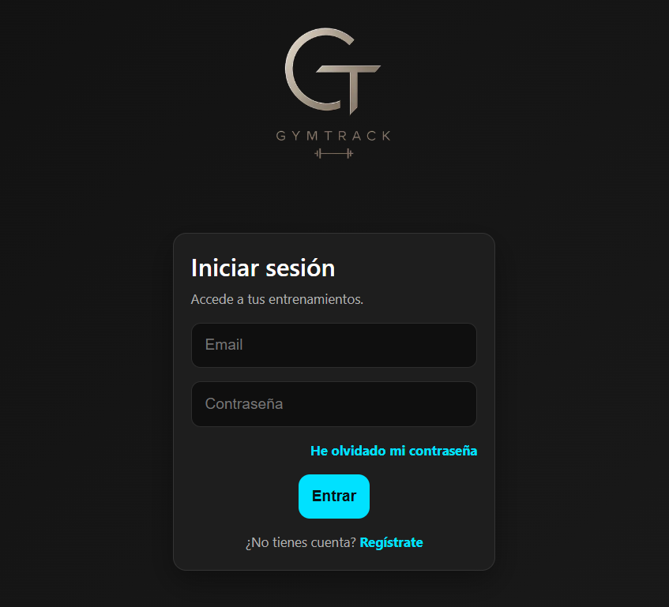
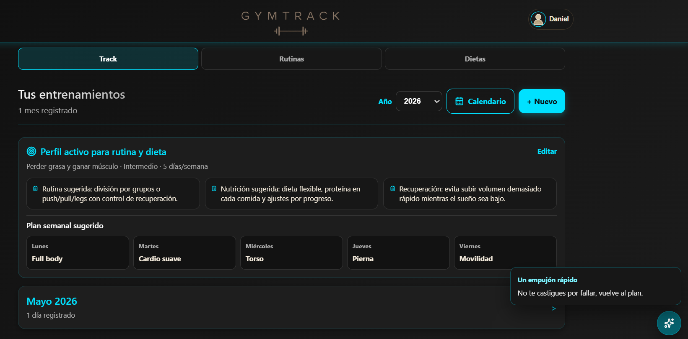
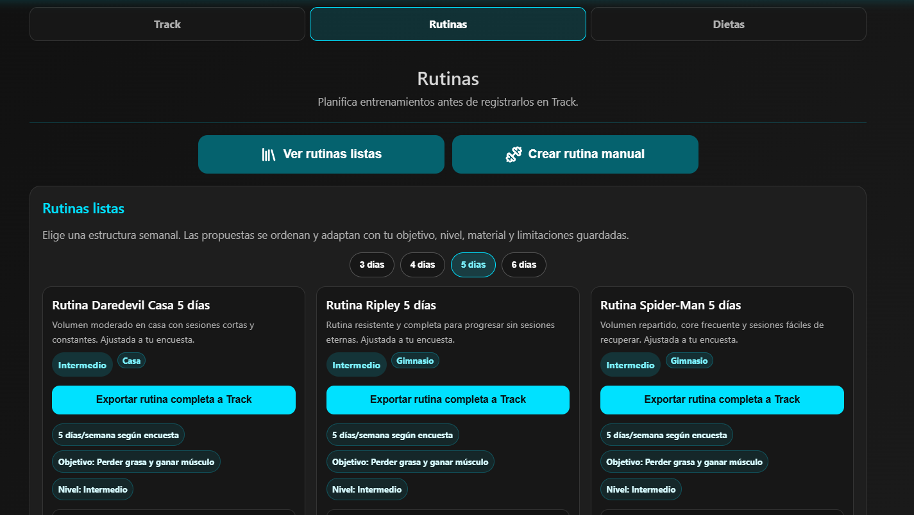
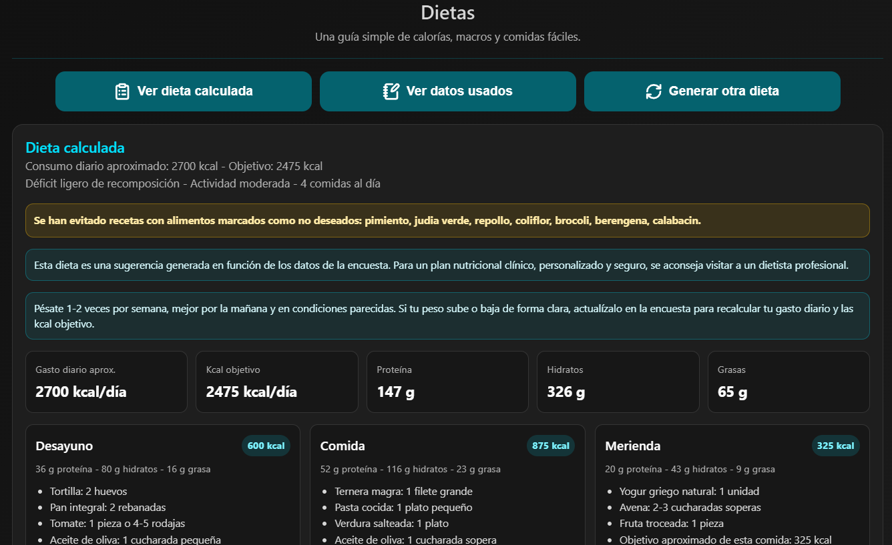

Astro PI - Gestor de Peticiones e Incidencias.
App diseñada en formato CRUD como sistema de ticketing PET-INC. Incluye inventario actualizable y panel de control para gestionar peticiones e incidencias.
v. 0.1

App diseñada en formato CRUD como sistema de ticketing PET-INC. Incluye inventario actualizable y panel de control para gestionar peticiones e incidencias.
v. 0.1

Aplicación web para registrar entrenamientos, crear rutinas personalizadas y consultar el progreso diario del usuario.
Aún en desarrollo.





Proyecto fin de grado de un videojuego de plataformas 2D desarrollado con el motor Unity.
v. 1.1
Videojuego 2D desarrollado en Unity, inspirado en The Binding of Isaac. Proyecto personal en curso.
Aún en desarrollo.